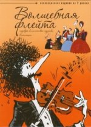

Դասական երաժշտություն անիմացիայում
Մեզանից շատերը սիրում են մուլտֆիլմեր, և այդ սերը կախված չէ տարիքից: Բարի ու զվարճալի, հուզիչ ու խորհրդավոր պատմությունները անտարբեր չեն թողնում ոչ երեխային, ոչ էլ մեծահասակին: Մուլտֆիլմերը պարզ են բոլորի համար: Դասական երաժշտությունը հնչում է շատ ու շատ մուլտֆիլմերում և անիմացիոն շարքերում, և երբեմն անփորձ հեռուստադիտողները նույնիսկ չգիտեն, որ դա դասական է: Վեբցանցում, հատկապես YouTube- ում, դուք կարող եք գտնել անիմացիայում դասական երաժշտության ավանդներ: Շատ դեպքերում, այն ծառայում է որպես միայն օժանդակ ֆոն հիմնական գործողության համար, բայց մենք կփորձենք դիտարկել այն մուլտֆիլմերը, որտեղ դասական երաժշտությունը գլխավոր հերոսն է կամ հատկապես կարևոր դեր է խաղում սյուժեի զարգացման գործում:
Սկսենք մեր «Շչելկունչիկը» (Սոյուզմուլտֆիլմ , 1973) հոյակապ մուլտֆիլմից ՝ Չայկովսկու հեքիաթի, դրամայի, գեղարվեստական իրացման և երաժշտության համադրություն, և ոչ միայն համանուն բալետից, այլ նաև Կարապի լճից և այլ թեմաներից: Քնած գեղեցկուհին ՝ հիանալի ադամանդ երեխաների և մեծահասակների համար: Հոֆմանի հեքիաթի հիման վրա նկարահանված «Շչելկունչիկ» բալետը շատ սիրված է տարբեր երկրների անիմատորների շրջանում. Դրա դրդապատճառներից ելնելով բեմադրվել են առնվազն առնվազն չորս լիամետրաժ մուլտֆիլմեր և մի քանի փոքր:
«Շչելկունչիկ» մուսաներ: Պ.Ի.Չայկովսկի
Դիսնեյի անմահ ֆանտազիան (1940) անիմացիայում դասական երաժշտության առաջին լիակատար և միգուցե ամենագեղեցիկ կատարումն է: Երկու ժամ տևողությամբ նկարը կազմված է ինը անկախ գունագեղ թվերից, որոնցից յուրաքանչյուրը կատարված է իր ոճով և նկարազարդում է դասական կոմպոզիտորների գործերից մեկը: Ֆիլմում օգտագործվում են Բախի «Toccata and Fugue in minor» երաժշտությունը, Չայկովսկու «Սյուիտը« Շչելկունչը »բալետից, Դյուկի« Կախարդի աշակերտը », Ստրավինսկու« Գարնան ծեսը », Բեթհովենի« Հովվական սիմֆոնիա »,« Պար Պոնչիելիի «La Gioconda» օպերայից ժամացույցի, Մուսորգսկու «Գիշերը ճաղատ լեռան վրա», Շուբերտի «Ave Maria» և Դեբյուսիի «Moonlight» օպերայից:
«Գիշերը ճաղատ լեռան վրա» մուսաները: M.P. Mussorgsky, մ / ֆ «Ֆանտազիա» 1940
Առաջին «Ֆանտազիա» ստուդիայից 60 տարի անց Disney- ը որոշեց կրկնել գաղափարը և ստեղծեց «Fantasy 2000» -ը: Ֆիլմը նկարահանվել է զարմանալի մասշտաբով և իսկապես անսահմանափակ մտքի թռիչքով: Սյուրռեալիստական նկարներ. Բեթհովենի, Ռեսպղիի, Գերշվինի, Շոստակովիչի, Սենտ-Սանսի, Դյուկի, Էլգարի և Ստրավինսկու դասական երաժշտական գործերից ներշնչված տեսարաններ տեղի են ունենում նվագախմբի կողմից այդ ստեղծագործությունների կատարման ֆոնին, ինչը, ըստ էության, ֆիլմը վերածում է ոչ մեկի: -դադարող տեսահոլովակ, որտեղ բառեր պետք չեն, բայց երաժշտությունն ու տեսողական մոլուցքը ստեղծում են այնպիսի տեսարան, որից դժվար է կտրվել: Բայց առաջին «Ֆանտազիան» ավելի լավն է:
«Firebird» մուսաներ: Ի.Ֆ. Ստրավինսկի, «Ֆանտազիա -2000» ֆիլմ
Սերգեյ Պրոկոֆեւի «Պետեր և գայլը» (ինչպես նաև Չայկովսկու «Շչելկունչիկը») անիմատորների սիրված նյութերից է: Հատուկ դրամատիկ խորությամբ չտարբերվող այս սիմֆոնիկ հեքիաթը գրավում է իր հասկանալիությամբ, մենք գիտենք, որ այն ստեղծվել է սիմֆոնիկ նվագախմբի երաժշտական գործիքներին երեխաներին ծանոթացնելու նպատակով: «Petit and the Wolf» - ի ամենահայտնի անիմացիոն արտադրությունները նկարահանվել են Disney ստուդիայի կողմից 1946-ին, մեր Սոյուզմուլտֆիլմ - ը `1958-ին, և շատ անսովոր անիմացիոն կինոնկար նկարահանվել է 2007-ին լեհական« Սեմաֆոր »ստուդիայի կողմից` համագործակցելով տարբեր երկրների անիմատորների հետ:
«Պետյան և գայլը » մուսաները: Ս.Ս. Պրոկոֆեւը
 Լեհական անիմատորներից դասական երաժշտության մասին անիմացիոն ֆիլմերի մեկ այլ հավաքածու, մուլտֆիլմերի ընտրություն 1989-ից 1996 թվականներին: Հաճելի, հետաքրքիր: Ռուսական խմբագրությամբ այն թողարկվում է 2 DVD- ով և կոչվում է «Կախարդական սրինգ. Դասական երաժշտության գլուխգործոցներ անիմացիայում»: 48 անիմացիոն տեսահոլովակներ, որոնք նկարահանվել են Բեթհովենի, Մոցարտի, Բախի, Մուսորգսկու, Շոպենի, Վիվալդիի և այլոց երաժշտության բազմազան տեխնիկայով, ոճերով և ժանրերով `բարոկկոյից մինչև մոդեռնիզմ: Վառ և արտահայտիչ աշխատանքների մի հիանալի հավաքածու, որը կարող եք անվերջ դիտել (և լսել):
Օպերան լայնորեն ներկայացված է անիմացիոն ֆիլմերում: Բայց նրա հետ այդքան էլ պարզ չէ: Ի տարբերություն գործիքային գործերի, որոնք ճիշտ ներկայացվելու դեպքում հասկանալի են ինչպես մեծահասակների, այնպես էլ երեխաների համար, օպերան իր դրամատիկ, սիրային, ողբերգական սյուժեներով նախատեսված է ավելի մեծ հանդիսատեսի համար:
Երկրորդ կետն այն է, որ գործնականում լիարժեք մուլտեր չկան օպերայի մասին, միջին հաշվով մեկ ֆիլմը տևում է մոտ 30 րոպե, ինչը հանգեցնում է ինչպես սյուժեի, այնպես էլ երաժշտության կտրմանը: Երրորդը լեզվական խնդիրն է, օպերային մուլտֆիլմերի մեծ մասը օտար լեզուներով, եթե սյուժեն չգիտեք, մուլտֆիլմը կորցնում է ցանկացած իմաստ: Եթե դա ձեզ չի խանգարում, ապա դիտեք և վայելեք զարմանալի ձայներ և գեղեցիկ տեսահոլովակների հաջորդականություններ:
Գ. Պուչինիի «Մադամ Բաթերֆլայ» օպերան
-
Եվ վերջապես, ռուսական անիմացիայի մարգարիտների ցրումը դասական երաժշտությամբ.
- «Թզուկները և լեռների արքան» ժամացույց Էդվարդ Գրիգը
- «Նկարներ ցուցահանդեսում» Համեստ Պետրովիչ Մուսորգսկու տեսքը
- «Մանկական ալբոմ» Պյոտր Իլյիչ Չայկովսկու ժամացույցը
- «Գարնանային մեղեդիներ» ժամացույցը Պյոտր Իլյիչ Չայկովսկիից
- «Կամարինսկայա» Միխայիլ Իվանովիչ Գլինկա ժամացույց
- «Պրոգ փողոց »ժամացույց Սերգեյ Սերգեևիչ Պրոկոֆև
- Դիտում է «Սեզոնները» Պյոտր Իլյիչ Չայկովսկին
- Թոմասո Ալբինոնիի «Adagio» ժամացույցը
Դեռևս հիանալի ավանդույթ էր մանկուց գեղեցկության զգացում սերմանելը: